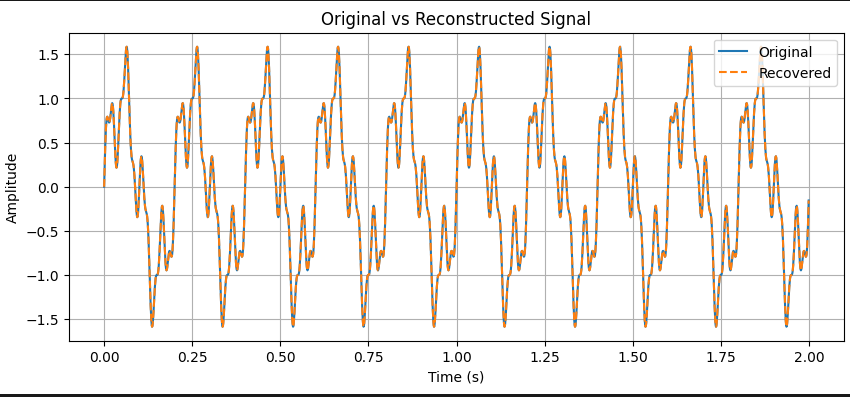

Python
Astropy
PySide6
Moon Phase Calculator
A desktop application using Astropy to calculate lunar phases and illumination, with a PySide6 interface.
View on GitHub →I'm Niriantsoa — I build small, focused tools in Python: data pipelines, desktop apps, and scientific computing scripts. Currently open for freelance programming work.

I build small, focused tools in Python — data pipelines, desktop apps, and scientific computing scripts. My background in astronomy means I'm used to working with messy, real-world data, and I like turning it into something clear and usable. Currently open for freelance programming work.
A desktop application using Astropy to calculate lunar phases and illumination, with a PySide6 interface.
View on GitHub →
An ETL and exploratory data analysis pipeline over a large IMDb movie dataset, built as part of the CHPC–DARA Coding School (July 2025), answering key analytical questions with Pandas and Matplotlib.
View on GitHub →
A DSP project covering signal generation, FFT-based frequency analysis, noise filtering with a Butterworth filter, and signal reconstruction — applied to detecting periodicity in a simulated variable star light curve.
View on GitHub →I'm just starting to take on freelance projects, so I don't have client testimonials yet. If you've got a minute, I'd love a quick rating — or just tell me what you think.
Send my ratingOpens your email app — nothing is stored on this site.
The fastest way to reach me is by email.